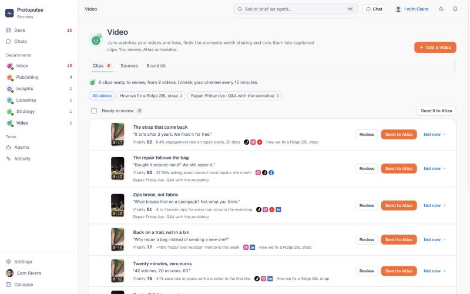
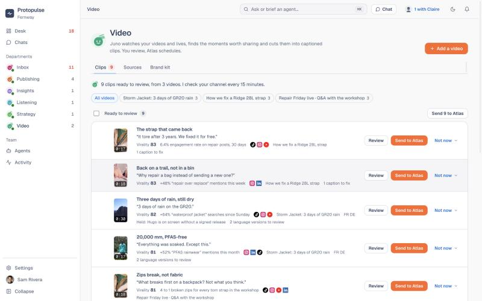
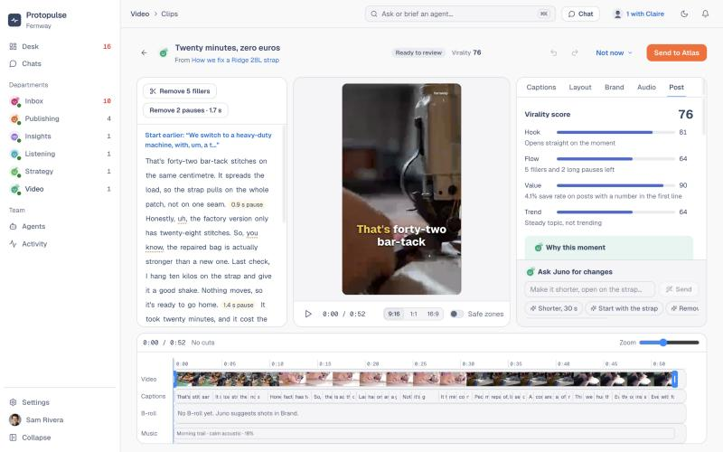
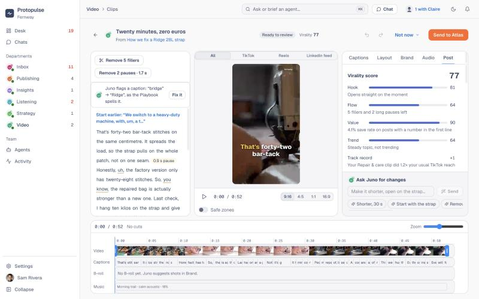
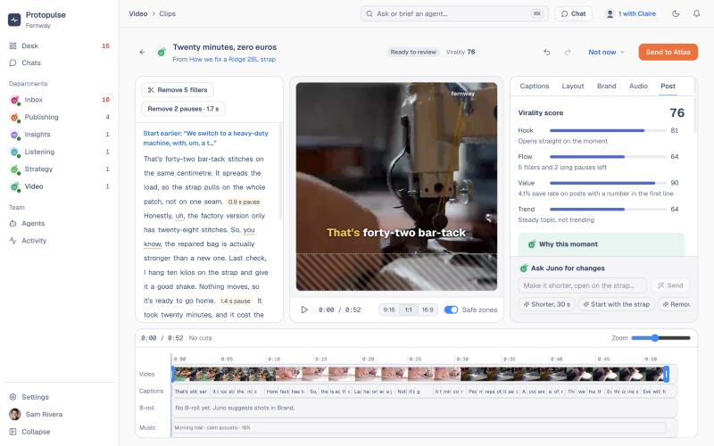
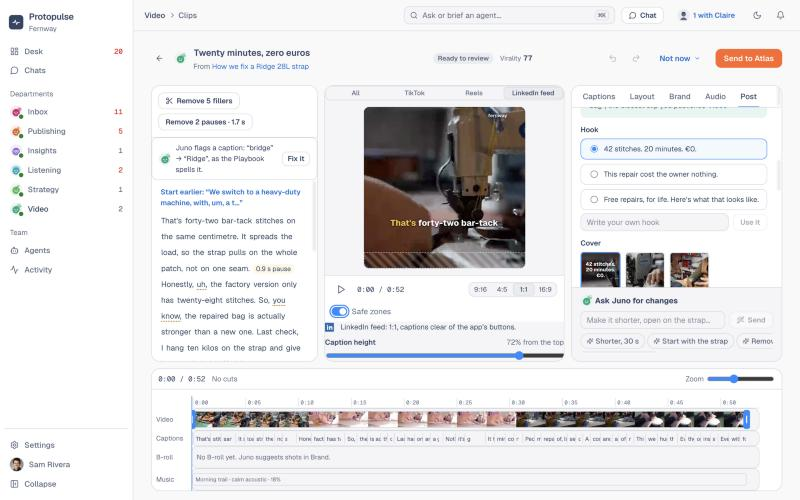

Juno, video: agent depth
Session of 25 November 2026. Juno already had the deepest editor; the work made her settings and guardrails govern what she does, closed the loop from clip to numbers, and added what Opus Clip and Agorapulse’s composer offer around a clip. Backlog: design-plans/agent-depth/juno-backlog.md, decisions: juno-log.md.
Parity, before and after
Each capability answers the seven agentic-first questions in code; the PR body holds the grid.
| Capability | Before | After | PR |
|---|---|---|---|
| Per-action levels (captions, reframe, dub) | Only 2 of 6 actions read; “Make it” dubbed after 1.5 s at any level | Each of the three follows Suggest · Draft · Act: fixes with Undo, a Desk card, flags in the editor; “Framing to check”; dubs to review | #35 |
| Guardrails | Shown on the profile, never applied | 5 clips per video per week, signed release (Hugo held), 15–60 s and 90 s on LinkedIn: applied to every send, with the reason | #44 |
| Evidence on clips found on request | evidence: [] | The moment, the Listening trend, the pillar’s best published clip | #25 |
| Speakers, pasted links | Sources named every non-host “Léo”; links silently used a sample | One speaker table; links say they play a sample | #25 |
| Publish loop | Sent clips never became Published; one static Good news card | Published at the first post’s time, with Iris’s numbers (clipPerf); real Good news at 1.5× the network | #49 #83 |
| Juno in Chat and ⌘K | “Clip the latest video” and a pasted link | Find moments, why a clip is held, best clips last week, a LinkedIn version | #54 |
| Score that learns | The score read only the clip | “Track record” from published clips of the same pillar, closest clip cited | #60 |
| Cover and thumbnail | The source poster everywhere | 3 frames from the clip’s shots (never Hugo), cover text, Shorts title, “Pick a better cover”; shown in Atlas too | #66 #64 |
| One version per network | One ratio for every network | 9:16, 4:5, 1:1 per app, captions above its buttons, a switcher and per-app safe zones | #72 |
| Labels and campaign | Posts without label or campaign | Pillar label, Sage’s running campaign when it fits | #80 |
| Language versions that go out | Dubs stayed in the editor | Approved languages become their own posts; Act sends all; Undo takes them back | #88 |
Video › Clips
After the GR20 upload: each row says what Juno left for Sam.


Editor › Post


Editor › one network’s version


Checks
- Done
npm testandnpm run buildgreen on every PR and onmainafter each merge; CI of each PR green before merging. - Done
Each action in its three levels: tests per level (captions, reframe, covers, versions, dubs, send).
- Done
1440 and 375, light and dark: editor Post tab and clip list, no horizontal scroll at 375; cover frames keep a visible focus ring.
- Done
Fixed
mainonce while working (#52, a lost import between two other sessions’ PRs).
Still open
Calendar posts stay “scheduled” after their time
Atlas owns publishing; request
atlas-from-juno-publish-due.md. Juno marks the clip Published on the post time without touching Atlas’s posts.Atlas’s preview box ignores the clip’s version
A LinkedIn clip is 1:1 in the editor but cropped to 1.91:1 in Atlas’s preview. Request
atlas-from-juno-clip-version.md(readversionOf).The seed card “3× your TikTok average”
The static Good news card in
data/desk.tspredates Iris’s averages; new Good news cards use Iris’snetAverage.Dropped at pitch
Blur or cut a person without a release (N6), clips during a live (N8), named speakers and speaker tracking (N9), bigger B-roll and music libraries (N10).